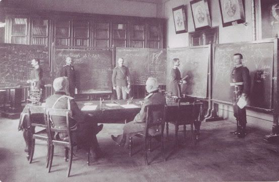
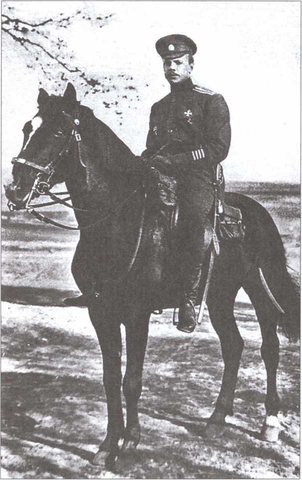

Двойные «перевертыши» в Корпусе Генштаба Красной Армии
5 ноября, 9:31

Небезынтересная статья о служебной карьере царского генштабиста Сыромятникова, который после революции 1917 года успел послужить "красным", потом "белым", потом опять "красным", а 1938 был расстрелян, а 1956 году реабилитирован.
Из минусов статьи - идеологические пассажи автора про "Совдеп" и попытки принизить накал зверств в тылу у Колчака.
Двойные «перевертыши» в Корпусе Генштаба Красной Армии: подполковник А. Д. Сыромятников и его служебная карьера
До сих пор карьера Генштаба капитана А. Д. Сыромятникова не отличалась от карьеры прочих молодых выпускников АГШ, окончивших alma mater в канун Первой мировой войны. Далее же происходит повышение, которого удостаивались далеко не все офицеры русского Генштаба: из обычных штабных офицеров наш герой в одночасье попадает в «генштабистскую» элиту, став членом преподавательского состава самой АГШ. Каковы были причины такого крутого «взлета»? Здесь могли дать себя знать значительные организаторские и военно-педагогические способности А. Д. Сыромятникова, и в их наличии у нашего героя мы далее убедимся. Однако вот что написал в своих мемуарах один из основателей российской разведслужбы XX в. Генштаба генерал-майор П. Ф. Рябиков: «Большой недостаток в офицерах Генштаба заставил открыть Академию в ноябре 1916 г. в виде двух ускоренных курсов (старшего и младшего)… Вместо некоторых не приехавших преподавателей и штаб-офицеров было вызвано несколько новых лиц: подполковники Сурин, Слижиков, Дюсиметьер, Поляков, Леонов, Капустин, Гущин, Сме- лов, Сторожев, Сыромятников, Солдатов, полковники Дрейлинг, …Киященко»
.
Исходя из сказанного П. Ф. Рябиковым, уместно предположить, что посредством Сыромятникова, равно как и прочих названных выше молодых офицеров Генштаба, в момент открытия цикла ускоренных курсов АГШ в конце осени 1916 г. руководством последней была просто заделана «брешь», образовшаяся в педсоставе Академии в результате начала Первой мировой войны, которая «забрала» в строевые части прежних академиков-преподавателей. Так или иначе, ближе к весне 1917 г. началась военно-преподавательская карьера нашего героя, которая продолжалась с небольшими перерывами целых 20 лет. На 1 февраля 1917 г. Генштаба капитан А. Д. Сыромятников значился «прикомандированным» в «Списке чинов учебно-административного состава, приватных лекторов и руководителей практических занятий Императорской Николаевской военной Академии»8. В период между 8 февраля – 1 апреля 1917 г. Сыромятников был назначен и. д. штаб-офицера, заведующего офицерами, обучающимися в АГШ, а уже 2 апреля 1917 г. произведен в подполковники с утверждением в последней должности.
Назначение Александра Дмитриевича заведующим обучающимися в АГШ офицерами совпало с открытием 1 февраля 1917 г. в ее стенах «3-х месячных подготовительных курсов 2-й очереди». Работа указанных курсов завершилась к 1 мая 1917 г. успешным выпуском
250 офицеров. Генштаба капитан А. Д. Сыромятников внес свой «вклад» в это событие, поскольку на 1 февраля – 1 мая 1917 г. являлся заведующим 5-м отделением офицеров, обучавшихся на курсах 2-й очереди: в подчиненном ему отделении находилось 49 офицеров-курсантов. Приказом Временного правительства от 10 мая 1917 г. А. Д. Сыромятников был назначен «штатным преподавателем военных наук с оставлением в занимаемой им должности» (то есть штаб-офицер, заведующий обучающимися в АГШ офицерами).
Большевистский переворот А. Д. Сыромятников, как и вся АГШ, встретил более чем спокойно и без какого-либо сопротивления, находясь в должности штатного преподавателя АГШ и в чине подполковника. Герой нашей статьи вполне прилежно преподавал военные науки и руководил слушателями АГШ при Временном правительстве, то же самое он продолжал делать и при режиме В. И. Ленина. На 11 мая 1918 г. А. Д. Сыромятников не только являлся штатным преподавателем военных наук в АГШ РККА, но и в марте – не позднее 23 июля 1918 г. вел практические занятия по общей тактике, тактике артиллерии, военной администрации в старшем классе 2-й очереди и в младшем классе 3-й очереди ускоренных курсов АГШ16. В это время в АГШ как раз заканчивали 6-месячный курс обучения курсанты 2-й очереди, тогда как курсанты 3-й очереди завершали свой подготовительный курс. Из рядов курсантов названных очередей вышли впоследствии выдающиеся специалисты Генштаба РККА, как то: В. А. Срывалин, П. М. Стрыхарь, Г. И. Теодори, И. Д. Чинтулов, Н. И. Шило и др. (все заканчивали курсы 2-й очереди и, кстати, состояли в той самой 5-й группе слушателей, которой руководил в феврале-мае 1917 г. Генштаба капитан А. Д. Сыромятников); из рядов курсантов 3-й очереди вышли М. И. Алафузо, И. И. Глудин, С. Ф. Мацюк, Н. Г. Позаченюк-Старжинский и др. В факте успешного обучения и выпуска вышеназванных персон из стен АГШ, бесспорно, есть немалая доля участия и А. Д. Сыромятникова. Немаловажно при этом отметить, что в своей академической деятельности капитан, а затем подполковник А. Д. Сыромятников получал сразу два денежных оклада — и как преподаватель АГШ, и как штаб-офицер, заведующий слушателями этой же самой Академии.
23–24 июля 1918 г. А. Д. Сыромятников вместе с АГШ был эвакуирован большевиками из Екатеринбурга в Казань, где к середине августа с. г. случайно оказался в распоряжении «белого» Комуча, захватившего город «на чешских штыках» в течение 6–10 августа 1918 г.
Далее служба нашего штаб-офицера потекла как по маслу — только теперь уже в «белом» лагере. Приказом по Военному ведомству Комуча от 16 августа 1918 г. (§ 1) постановлением Конференции АГШ А. Д. Сыромятников был назначен начальником оперотдела Главного управления Генерального штаба Народной армии Комуча в Самаре. При этом от должностей штатного преподавателя и заведующего офицерами, обучающимися в АГШ, Сыромятникова никто не отстранял, и о совмещении им обеих должностей свидетельствует целый ряд документов. Иными словами, он и здесь получал денежный оклад, причем теперь уже сразу за три должности. Не раньше октября 1918 г. А. Д. Сыромятников был эвакуирован в Омск вместе с прочими преподавателями и курсантами АГШ. Он «пришелся ко двору» и здесь, став одним из военных организаторов переворота 18 ноября 1918 г., приведшего к власти в Омске адмирала А. В. Колчака. Указанный факт из биографии нашего героя уже достаточно подробно описан в историографии «колчаковщины». Здесь любопытно отметить другое:
Александр Дмитриевич, находясь на службе у «белых», всячески афишировал и подчеркивал факт своего участия в становлении «колчаковщины».
В научной литературе уже вводилось в оборот «письмо бывшего генерал-квартирмейстера Ставки полковника А. Д. Сыромятникова министру финансов И. А. Михайлову» (14 апреля 1919 г.), в котором описано, кому и какая роль досталась во время переворота 18 ноября 1918 г. Однако мы обратимся к этому письму снова и акцентируем наше внимание на следующем моменте: в упомянутом письме наш герой явно стремился подчеркнуть тот факт, что, в отличие от целого ряда других участников переворота, он не только «не получил никаких наград», но и был «переведен с ответственной работы в Ставке в Академию Генерального Штаба». Александр Дмитриевич явно был не чужд интриганству, не случайно же генерал В. Г. Болдырев на 28 ноября 1918 г. подозревал Сыромятникова в стремлении ускорить его, Болдырева, отбытие (читай — изгнание из Омска) в угоду Колчаку. Современный биограф Колчака пишет: «…штат офицеров Ставки (армии Уфимской Директории. — В. К.) был набран из профессоров АГШ, захваченной в Казани. Это была тесно сплоченная корпорация, и ни Болдырев,
ни Розанов порой не знали, чем они занимаются. Главную роль среди них играл полковник А. Д. Сыромятников, занимавший должность генерал-квартирмейстера и замещавший [С. Н.] Розанова (начальника штаба Ставки Колчака. — В. К.) во время его отсутствия».
На 24 февраля 1919 г. А. Д. Сыромятников, уже в чине полковника, не только являлся преподавателем АГШ в армии Колчака, но одновременно служил и генерал-квартирмейстером указанной армии (опять — двойной оклад!). Кроме того, по замечанию современного исследователя, наш герой был «одним из лиц, близко к стоящих» к адмиралу Колчаку. А. Д. Сыромятников на «белой» службе показал себя не только способным организатором учебного академического процесса и «верным царедворцем» у Колчака. В должности генерал-квартирмейстера Ставки Колчака герой настоящей статьи пробыл недолго. Уже с марта и на 24 июня 1919 г. Александр Дмитриевич, занимая должность начштаба Уполномоченного Верховного правителя и Верховного главнокомандующего, командующего войсками в Енисейской и части Иркутской губерний Генштаба генерал-лейтенанта С. Н. Розанова, участвовал в организации борьбы с «красными» партизанами на внутреннем фронте Сибири. Иными словами, в течение службы у «белых» А. Д. Сыромятников успел побывать и в роли «карателя героического партизанского движения». Службу в «белом» лагере Александр Дмитриевич завершил в чине полковника и в должности начштаба Приамурского военного округа (данные на 10 октября 1919 г.).
После краха «колчаковщины» А. Д. Сыромятников снова перешел на службу в РККА.Поразительны здесь не столько выдающиеся «хамелеонство» и «гибкость хребта» нашего «генштабиста» — в конце концов, он никого не предавал, а стремился лишь, по возможности, наиболее выгодно и наименее болезненно для себя устроить судьбу и службу в экстремальных условиях 2-й «русской смуты». Гораздо более примечательной представляется реакция военных властей «Совдепии» на вторичный переход Генштаба полковника А. Д. Сыромятникова на службу в РККА. Казалось бы, А. Д. Сыромятникова уже в начале 1920 г. большевики должны были если не расстрелять немедленно (как это сделали, по некоторым данным, например, с Б. П. Богословским), то отправить в самые дальние концлагеря, наказав бывшего «белого» офицера если не за «верную службу» Колчаку, так за подавление восстаний «доблестных красных повстанцев» в Сибири... Ничего этого не случилось. А. Д. Сыромятников даже не был взят в плен во время массовой сдачи колчаковской армии на сибирских станциях в начале 1920 г.
Вообще, 1920 год — самое «смутное» время в биографии нашего героя. Исследователь социальной истории Западно-Сибирского военного округа РККА профессор Ф. Н. Подустов полагает, что А. Д. Сыромятников занял должность начальника Высшей военной школы Сибири (далее — ВВШС) уже в 1920 г.35, однако определить более точную дату замещения этой должности героем нашей статьи в отмеченном году затруднительно. В то же время, анализ целого ряда документов, прежде всего именных списков Корпуса Генштаба РККА начала 1920-х гг., позволяет сделать вполне определенный вывод о том, что на 25 января – 16 июля 1921 г. бывший Генштаба полковник А. Д. Сыромятников уже возглавлял ВВШС Западно-Сибирского военного округа (или Сибвуза) в РККА. Отметим, что ВВШС в это время была самым престижным военно-учебным заведением региона, и по своему статусу, видимо, лишь на одну ступень отставала от самой АГШ. Неслучайно приказом № 193 от 17 октября 1921 г. по ВУЗу Сибири слушатели ВВШС удостаивались «выдачи дипломов о подготовке к командованию отрядами из трех родов войск и замещению должностей Генштаба, при отсутствии кандидатов, окончивших Академию Генштаба».
Важно сказать, что, несмотря на тот факт, что в «Списке кандидатов на должности Наштадивов и Наштабригов отдельных» (составлен не ранее 16 июля 1921 г.) А. Д. Сыромятников назван в группе «генштабистов, бывших у белых», это отнюдь не повредило его карьере в РККА в 1920-е гг. Уже с 1 декабря 1921 г. Александр Дмитриевич служит штатным преподавателем, но теперь уже в самом «центре» и на самом «верху» системы Главного управления военно-учебных заведений — в самой Академии Генштаба, в которой с 1 октября 1922 г. – на 1 марта 1923 г. он являлся уже старшим руководителем по тактике39. Кроме того, приказом РВСР за № 2480 от 1922 г. главному герою настоящей статьи был присвоен 18-й разряд («род. оружия — комсостав пехоты»). Здесь уместно вспомнить, что 10 июня 1924 г. РВС СССР издал приказ № 744 «о введении с 1 июля 1924 г. 19-разрядной тарифной сетки должностей для младшего, среднего, старшего и высшего комсостава… РККА». Иными словами, «бывший колчаковский генштабист» А. Д. Сыромятников после возвращения на службу в РККА практически тотчас же был аттестован в ней почти по самому высокому разряду.
Теперь следует прервать наше биографическое исследование и задаться справедливым вопросом: как случилось, что Генштаба полковник А. Д. Сыромятников, который в 1918–1919 гг. не просто служил «белым», но являлся одним из главных действующих лиц колчаковского переворота 18 ноября 1918 г., а затем, в 1919 г., — «карателем красных партизан», не только избежал ареста и отправки в концлагеря «Совдепии», но по приходу Красной Армии в Сибирь сразу же оказался на ведущих должностях в «красном» Сибвузе? Такой успех был обусловлен, по мнению автора настоящей статьи, следующими причинами.
1. Стремительный рост на территории «красной» Сибири всевозможных военных курсов и школ. Уже к 31 марта 1920 г. в названном регионе действовало 11 вузов, а к началу июля с. г. численность вузов Сибири достигла 18.
2. В очередной раз дала себя знать традиционная политика жесткого прагматизма,активно проводимая Л. Д. Троцким и его ведомством по отношению к «лицам Генштаба», поступавшим на службу в РККА на различных этапах периода 1918–1920 гг. Суть этой по-
литики заключалась в том, чтобы использовать того или иного «генштабиста» максимально эффективно для РККА, ничуть невзирая при этом на его прошлые «грехи», в нашем случае — на факт активной службы А. Д. Сыромятникова ранее у «белых».
3. Наконец, существенную роль сыграли и личные качества самого А. Д. Сыромятникова — прежде всего, его бесспорно выдающиеся военно-преподавательские и организаторские способности. Их отмечал косвенным образом даже комиссар Военной академии РККА Р. А. Муклевич, который отнюдь не отличался симпатиями к офицерству старой армии. Между тем, составляя на 22 мая 1924 г. служебную характеристику на другого «генштабиста» и преподавателя АГШ, В. К. Токаревского, комиссар писал, что Токаревский «принял в середине года (1924 г. — В. К.) кафедру от пр[еподавателя] Сыромятникова, образованного и способного педагога-руководителя. Поэтому в сравнении с ним много теряет…».
Герой нашей статьи пользовался авторитетом и у преподавателей военно-учебной системы Сибири. Так, выпускник ускоренных курсов 4-й очереди военно-го времени АГШ и «бывший белый офицер» есаул / войсковой старшина В. Е. Шайтанов в анкете, заполненной им 25 января 1921 г. уже на службе в РККА, в графе «Кто Вас знает из видных Советских или партийных работников…» указал, в частности, «начальника ВВШ Сибвуза Влад[имира] Дм[итриевича] Сыромятникова…» (имя Сыромятникова указано ошибочно. — В. К.)
Здесь следует также напомнить читателю, что к началу 1920 г. наш герой имел за плечами порядка двух лет военно-преподавательского стажа (если считать с конца 1916 г.) в самом престижном военно-учебном заведении России — АГШ, и уже внес свой вклад в подготовку выпускников старшего курса 2-й (февраль 1918 г.) и подготовительного курса 3-й (июнь 1918 г.) очередей ускоренных курсов военного времени в АГШ.
Учитывая приведенные факторы, уместно будет заключить, что в начале 1920 г. генштаба полковник А. Д. Сыромятников оказался в «нужном месте в нужное время». Иными словами, в условиях интенсивного строительства «местных» военно-учебных заведений РККА специалист с высшим военным образованием, тем более закончивший самую престижную военную школу, как РИА, так и РККА, обладающий к тому же опытом военно-педагогической работы, не мог быть невостребованным. К сказанному добавим, что А.Д.Сыромятников был далеко не единственным «генштабистом», кто смог в дни русской «смуты» 1918–1920 гг. дважды «устроиться» на службу в РККА, перемежая ее со службой в «белых» частях. Любопытно при этом заметить, что указанная категория «генштабистов» меняла своих «хозяев» именно тогда, когда военное положение последних оказывалось под угрозой краха, либо казалось таковым. Из
«генштабистов» Восточного фронта, прошедших служебный путь в 1918–1920 гг. по той же «схеме», что и А. Д. Сыромятников (РККА — белые армии Комуча / Уфимской Директории / Колчака — РККА), следует назвать следующих персон: подпоручик Д. И. Вяткин, штабс-
капитаны А. А. Буров, М. Б. Дмитриев, капитаны А. Д. Загребин, С. Н. Кравцов (Кравцев), А. Ф. Мауринг, подъесаул И. М. Финицкий; подполковники М. И. Матьянов, В. И. Оберюхтин, капитан / подполковник А. Н. Николаев; полковники А. В. Беклемишев, С. В. Винтер,
Н. Я. Капустин, В. Н. Соколов, генерал-майоры Н. Д. Павлов, В. Л. Попов, В. Д. Васильев (чин неизвестен). В то же время, из Вооруженных сил Юга России А. И. Деникина и армии П. Н. Врангеля в РККА вернулись: штабс-капитан / капитан С. К. Сахаров, капитан В. В. Бе-
лецкий, полковник К. К. Витковский, из Донской Армии — капитан Л. И. Левитский (Левицкий) и полковник Г. Д. Суходольский, генерал-майор В. И. Стойкин (последний между службой у «красных» и «белых» побывал на службе в Украинской Галицийской Армии), а из армии Украинской державы — подполковник / полковник М. И. Иващенко. Повторно на службу в РККА перешел от «белых» штабс-ротмистр / ротмистр Н. В. Энглер и т. д. Всего 46 чел.
Приказом РВСР № 198 от 25 декабря 1923 г. штатный преподаватель Военной академии РККА С.Д.Сыромятников увольнялся в бессрочный отпуск с зачислением на учет по Московскому уезду. Однако и после такого, по сути, отстранения от активных дел А.Д.Сыромятников на «улице» не остался: он работал преподавателем военного дела в МГУ. О личной жизни А.Д.Сыромятникова известно немного. На 18 июля 1914 г. он был холостым. У Александра Дмитриевича, видимо, был родной брат Борис, бывший до октября 1917 г. офицером. На начало 1930-х гг. Б.Д.Сыромятников служил в «Совдепии» военруком землеустроительного института при Украинском военном округе. Сам же А. Д. Сыромятников на март 1938 г. работал по договорам в учреждениях Народного Комиссариата Обороны СССР, оставался беспартийным и проживал в Москве (1-й Кирпичный пер., д. 26, кв. 2). 27 марта 1938 г. Александр Дмитриевич был арестован, а 29 июля с. г. Комиссией НКВД СССР и прокуратурой СССР приговорен к высшей мере наказания по обвинению в принадлежности к «офицерской к/р шпионской организации». 27 августа 1938 г. А. Д. Сыромятников был расстрелян и похоронен в Бутово (Московская обл.). 12 марта 1956 г. наш герой был реабилитирован.
А. Д. Сыромятников за период 1917–1938 гг. прошел сквозь все «бури и грозы» внутреннего русского конфликта первой трети XX в., оставаясь до определенного момента не только «целым и невредимым», но и всякий раз успешно делая вполне приличную служебную карьеру.
http://istmat.info/files/uploads/53355/a._d._syromyatnikov._nir._2016._no_1.pdf - цинк

PS. Касательно вопроса, а почему его снова приняли на службу в РККА несмотря на участия в карательных акциях в Сибири, то есть весьма характерным пример, когда на службу красным пошел небезызвестный Слащев-вешатель (который зверствовал явно поболе Сыромятникова), которого так же приняли по причине прагматичного подхода к вопросу о необходимости обучения красных командиров военспецами, даже несмотря на их прошлое. В 30-е нужда в них в значительной мере отпала и в том числе и этим объясняется та легкость, с которой РККА рассталась с большей частью из них (кого-то просто уволили, кого-то загребли по делу "Весна", о некоторых вспомнили в 1937, как о том же Сыромятникове), так как по мере обострения внутриполитической борьбы в СССР, вопрос безусловной политической лояльности снова стал выходить на первый план и темные пятна биографии начинали играть порой решающую роль, перечеркивая даже последующие заслуги.
PS2. На заглавной фотографии - экзамены в академии Генштаба Российской Империи, начало XX века.